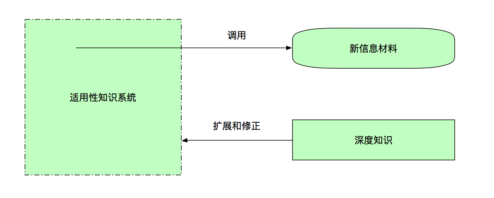

郑重是这样一种态度：不敷衍、不迟疑、不摇摆，认真地聚焦于当下的事情，自觉而专注地投入
孩子用“郑重”的态度玩耍，反倒是成年人用戏谑的、游戏的态度去度过自己的人生
更好的对待时间的十条建议：
1）生活在当下
2）严肃地对待时间
3）留意自己拥有的空间并享受它
4）反思自己和其他人的时间视角
5）从现在出发联结过去
6）并不完全沉浸于过去
7）制订实现目标的计划
8）平衡计划和非计划时间
9）视未来存在于当下
10）对未来保持积极的态度
现代人很容易陷入“两个无能”之中，一是“选择无能”，二是“执行无能”
尽量少做“短半衰期”的事情
对泛滥的资讯保持警惕，把更多的目光投向那些被“时间之尺”筛选过的经典作品上，可以避免无谓的躁动
“平衡时间观”，在工作场合和生活场合采用不同的时间视角
尽可能求快的事情：做家务等体力劳动，完成常规的事务性工作，完成简单的执行性任务，常用商品的线上线下购买，注定无法达成共识的争吵和争论等
尽可能求慢的事情：与家人共度闲暇时光，欣赏艺术作品，自我反思，思考重大决策，创造性活动中的酝酿过程，为一个挑战性任务做好准备等
“心流”（flow）是指人全情投入于一件事中的状态
获得高质量的休闲满足其实很简单，就是：找到并保持至少一项长期的业余爱好
用平衡观点看待过去、现在和未来，用郑重的态度过好当下的生活，并联结起过去和未来
明确工作和生活的界限，用未来视角工作，用享乐主义视角生活
使用“时间之尺”，审视事件的长期价值，尽可能删减非必要事件
让“远期未来”更加具体，为“近期未来”增加挑战
把握好做事的节奏，区分“求快”的事件和“求慢”的事件
提升时间使用的“深度”，减少被动式休闲的比例，保持至少一项长期的业余爱好
决策心理学认为，人在面临选择时，通常会采用“满意原则”，而不是“最优原则”
满意原则，就是人会从自己最熟悉的待选项开始逐一考察，如果考察到一个满足内心标准的选项，就会采纳这个选项，余下的选择就放弃了，而并不是对比所有待选项，然后选出其中最好的
“如果一个人，处处能以最高目标为原则，必然能在生活中做出正确的决定”
“最高目标”，并不是指那些可以被度量且数量力求最大化的目标，而是指从整个人生来看最有意义和最有价值的目标，这个目标反映了一个人内心深处的渴望
当我们在人生中遇到某个无法摆脱的僵局时，先不妨试试这三步：
1）找出潜意识中的隐含假设
2）识别隐含假设中的不合理性，进行校正
3）形成新的更灵活的思维框架，在此基础上思考出“可能选项”并进行尝试
“目标悬置”，把你的目标停下来、放一放，但这个“放”不是放弃，只是悬置。在这个停下来的时间（比如几天、几个月甚至几年）里，你可以休息放松，也可以去做完全不同的事情
“改造”爱好的一个常见方法，是把对一件事情 的“消费型兴趣”升级为“生产型兴趣”
“精细化（elaborage）思考”，也就是利用适当的工具，对各个选项从不同方面进行深入、细致的分析，最后综合分析结果得出答案
所谓选择，就是要权衡好本末轻重，清楚自己人生中到底想要什么、追求什么
为自己设定更高的目标，就会发现更多更好的选项，做出更加完美的决定
过去的经历、习惯和思维习惯，常在我们思考时自动植入“隐含假设”，让我们意识不到更多的“可能选项”
如果有太多的可选项，应该把选择对象分解 为不同的维度，然后对可选项从不同的维度做出评估
在做涉及情感、喜好等主观性特别强的选择时，最好的方法是聆听内心的声音
不管你做了哪个选择，你的某些东西永远不会改变，最终带着你起身目的地的，可能并不是某一个选择，而是那些你不会改变的东西
一件看上去繁难的事情 ，只要开始做了，就会变得越来越容易
如果总能想到一件事就完成一件，那么我们同时应对的事情就少了，也就不用多花心思去“管理”这些事情
种一棵树最好的时间是十年前，其次是现在
“精准创业”中有个关键概念叫“最小化可行产品”（minimum viable product，MVP），它指的是可以使用最少资源、被最快制作出来的、可执行基本功能的、能被用户使用的试验性产品，创业者应该尽快把最小可行产品发布出去，然后根据用户使用它的反馈来进行优化，这一过程称为“构建 —测量—学习”（Build-Measure-Learn）的循环
人们总是留恋自己已经付出的努力，而不管这些曾经的努力对未来是否已经推动了价值，这也称为“沉没成本谬误”
以精准创业的方式去走向人生的成功，便要做到这三点：
1）克服“过度”准备的惯性，向前一步，把未完成的事情完成
2）克服“自我防卫”的心态，乐于接受反面意见并加以慎重地审视
3）克服“沉没成本”的固执，有勇气否定并重新构造自己的产品
“核心思考区间”：事实上大多数任务都有一个至关重要、通常也是最棘手的部分，这个部分需要我们集中精力、非常专注地进行思考，然后将其破解。一旦这个部分被我们“吃下”，那么这个任务就已经完成了大半，余下的就是一些支持性的、补充性的工作了
牛人总是在前瞻性思维和总结性思维上都非常出色。他们既能提前设想未来事件中可能出现的方方面面的情形，又能从已经发生的行动中加以反思 ，因此他们总是比一般人想得更加深入和周全
反思一定要及时
意外结果也许并非本身有多特别，而是在于它落在我们原有的认知之外 。因此关注意外事件就是打开我们认知局限性的方法
第一件事，你不知道怎么做的时候，就直接开始做吧。只要开始了第一步，就会有第二步、第三步
乐于接受反面意见，有勇气否定并重新构造自己的产品
多线程工作，首先需要一段专注不受干扰的时间，完成工作中最核心部分的思考
集中处理同质性的工作，可以减少不同质工作间的转换损耗
从理论出发不一定能指导实践，只有在实践中通过反思积累的知识才能指导实践
行动后要及时反思，并梳理这件事情 的“反应链”，特别关注其中发生的意外现象
打开新旧知识之间的通道，多思考以下四个问题：
1.针对当前的学习材料 ，我已具备了哪些相关的知识？
2.针对当前的学习材料 ，我又学到了哪些新的知识？这些知识对原有知识构成了何种补充或者挑战？
3.针对当前的学习材料 ，还有哪些未知的东西，且这些东西我通过简单的探索就可以了解？
4.针对当前的学习材料 ，还有哪些未知的东西，无法轻易地获得解答，同时又有价值成为我长期去探索的问题？
在问题引导下的学习最大的特点是，它所希求的知识是没有边界的，为了找到问题的解，我们可能会寻访任何可能的线索，查阅任何有益的资料，而不受既定观点的束缚
提问的关键，是提出现实场景下的、可能具有开放性解答的问题，而非一个纯理论性的、封闭性的问题
从阅读、观察和思考的过程中产生问题，先解答表层的、容易的那部分，留下深度的、探索式的问题给自己，并在由此问题招致的持续困扰和折磨中开启卓越的心智旅程
信息解码的三个层次：
1.它说了什么？给我什么感受？
2.它是什么？对我有什么价值？
3.它的内部是怎么组成的？它的效果是怎么实现的？
一个高段位的学习者，通常是一个适应型专家，他们可以有意识地构筑一个信息解码和知识扩展的良性循环

三个寻找解码入口的路径：
1.不只要去寻结论，还要去寻过程
2.不只要去做归纳，还要去做延展
3.不只要去比较相似，还要去比较不同
你掌握了多少知识并不取决于你记忆了多少知识以及知识的关联，而是取决于你能调用多少知识以及知识关联
求知分为三个层级 ：信息、知识和技能。最差的学习者只接收信息，贪多求广；好一点的学习者看重知识，以记忆为目标；高手磨练技能，只求日日精进；技能是学习的终点，信息和知识是迈向这个终点的路与桥
学习，应该以学习者心中的问题为中心，让问题引导着我们去探索答案
问题的提出，需要基于已有的知识体系，并通过问题将新、旧知识串联起来
通过深入事物内部的解码，我们可以发现事物深厚的内涵，有机会掌握其中精巧细微的技法，不断重建自己的知识体系
对一个现实问题的解决，或者对一个现实情境的洞察，往往需要同时调用不同知识谱系上的知识
学会有意识地去分析不同领域知识之间的潜在关联，通过不同知识的迁移、印证、互补，获得启发，甚至生成新的思想或发现
简化是清晰思考的前提。把原本繁复的内容梳理、整合、精简完成后，我们的头脑才能腾出空间，处理其他的信息进行更复杂更精微的思考
如何过滤没有价值的信息：
精选可依赖的信息源
不追逐当下流行或过热的信息
重事实信息，轻观点和评论
定期闭关，屏蔽外界纷扰
通过对自己和他人的深入的了解，找到那个正好的“点”，可以映射出最多的内涵，那就是简洁
当我们习惯了碎片式地吸收信息，碎片式地表达信息，碎片式地做各种浅尝辄止的事情 ，那么我们的头脑，我们的生活就必须是烦琐、冗余和无所适从的
“平等思路”策略，即用不同关注点主导的思路同时发展，然后再寻找不同思路间的交叉综合
当我们思考一个现实场景中的问题时，如果很快就找到了答案，那么可能意味着这个答案并不周密，只顾及了问题中的某个侧面或局部。若真要把一个问题所牵涉的方方面面都想清楚，则要困难得多，只有少数思维能力极强的人才能做到这一点
既要简化外界输入的信息，也要简化我们表达 出来的信息，为思维腾出更多的使用空间
基于深入了解的简洁，不是乏味，而是意味着更加丰富的内涵
为了让思维更好地发散，获得更多的灵感，一是要关掉大脑里评价的声音，二是要适当地引入混乱与随机
思维依赖于工作记忆，通过将思维外显为图像，给予思维更多的探索空间，也能进一步推动思考的进行
现实中的问题，总是牵涉太多的因素，借助矩阵、清单等工具，可以完善思考的周密程度
“以大多数人的努力程度之低，根本轮不到拼天赋”
乔治·莫舍：“仔细考察自己的优势和劣势。利用自己的优势努力工作，通过与人合作来平衡自己的劣势。回避在很多不同方向上空耗精力。保持专注，把自己能做的做到最好，并保持留意新的机会”
胡适：不苟且就是“狷介”。狷介不仅是一种德行，也是一种做学问的品格，也就是“一丝一毫不草率不苟且的工作习惯”
选取一件你认为最重要，对你来说最有价值的事情，兢兢业业地把它做精、做细、做好；而其他次要事情 ，用七八十分的标准去完成它们就够了；另一些无足轻重的事，则能不做就不做
努力的第一个秘决在于“舍弃”
“杠铃策略”，同时采取两种极端行为，一方面，也就是在大多数投入中，采用能够抗拒负面“黑天鹅”风险的强韧结构，也就是专注在一个既定的领域进行学习；另一方面，拿出较小的一部分时间，进行积极大胆的探索和尝试，以博取迎接正面“黑天鹅”事件的机会（百度百科：黑天鹅的存在寓意着不可预测的重大稀有事件，它在意料之外，却又改变一切。人类总是过度相信经验，而不知道一只黑天鹅的出现就足以颠覆一切。然而，无论是在对股市的预期，还是政府的决策中，黑天鹅都是无法预测的。“9·11”事件、美国的次级贷危机、我国的雪灾，都是如此。）
“必要难度”（desirable difficulties），学习的时候，要给自己增加一些难度，这对提升学习效果是非常必要的。有个关键的操作要领是：不要满足于完成“标准动作”
意志力是非常不可靠的，你越强调它，越依赖它，你中途放弃的可能性就越大。因为意志力总有可以承担的极限，就像一根已经绷得很紧的绳子，若是再用力的话，随时都会绷断
每个人都具有自己独特的优势，并且可以通过努力变得更优秀
“知识资产”（knowledge portfolios），在新思想或新技术刚刚开始兴起无人问津之时就投入进去，成为某一个新知识领域的先驱，实现知识能力的“低买高卖”
独特会让你更容易被发现、被牢记，更加地不可替代。意味着你的形象、个性、知识、经验、经历中的一项或者几项是别人无法复制 、无法模仿的，意味着你为这个多元的世界又增加了一种新的可能性和价值
在战略管理领域里，很多学者认为最好的竞争策略并不是教你如何跟其他人竞争，而是开拓出一条独一无二、罕有竞争者的道路
做酷事的七个方法：
做一个主动的探索者，敢于突破种种局限，不断试错，形成自己的优势甚至是独特的知识资产
不只在理论化的情境下去思考问题，而且要磨练把理论融汇于现实、考量现实复杂情形的本事
在理论与现实的充分联结中，一步步地构筑自己独特的知识和经验体系，逐渐打谁出属于你个人独一无二的智识
根据自己内心需要，而不是外界的认同，做出独立的选择，甚至去做一些酷的事情
如果你找到了一条别人都还没走过的路，只要把这条路走完，你就赢了